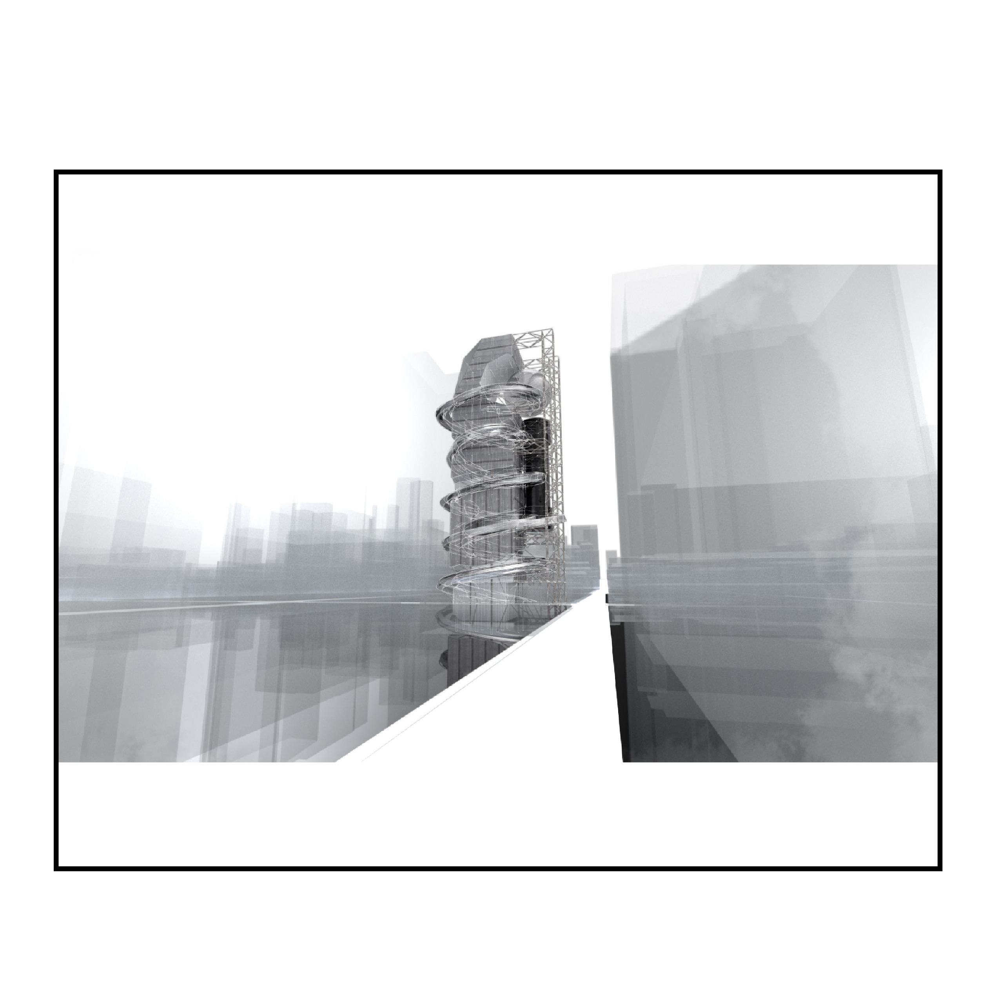
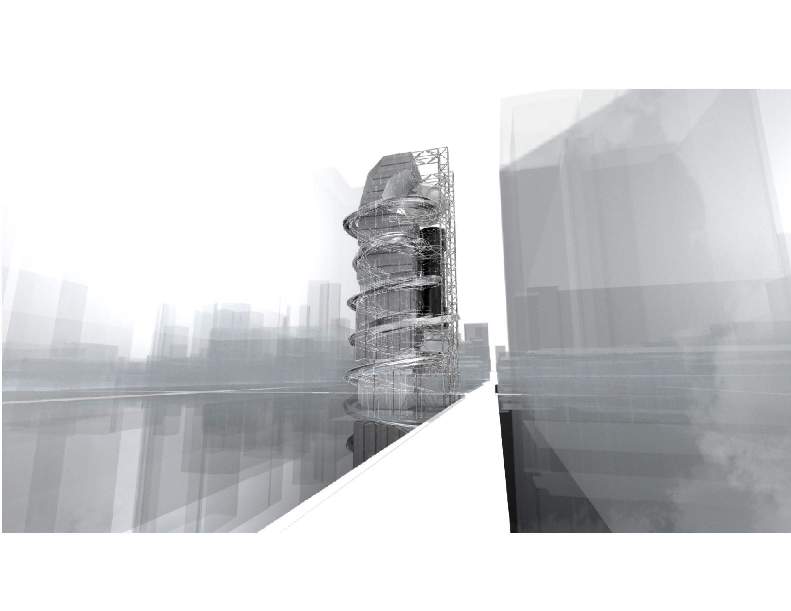
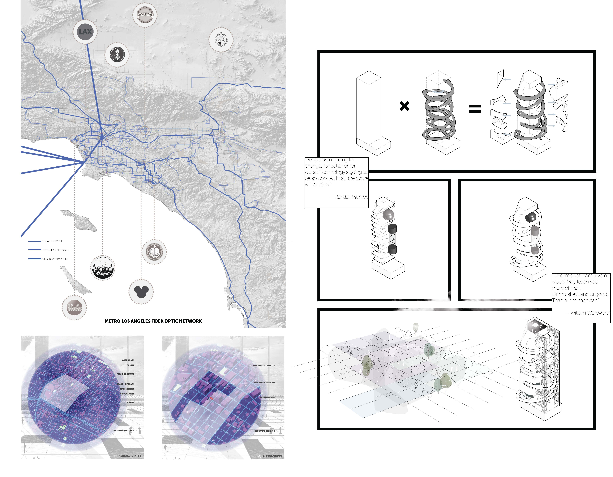
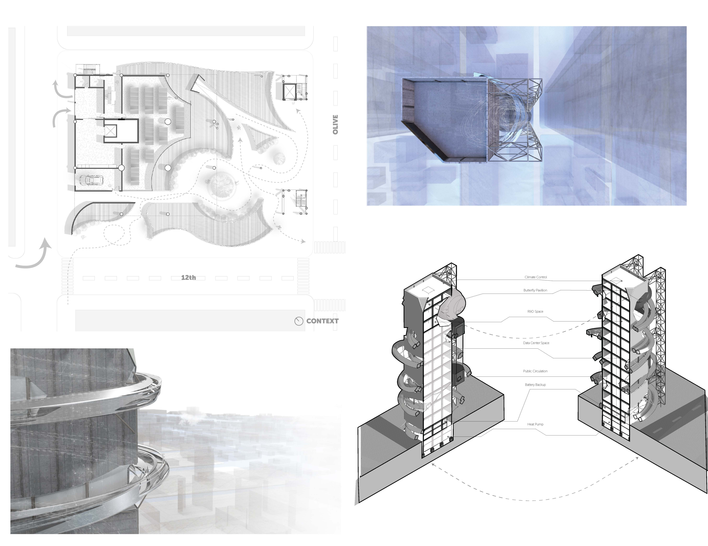
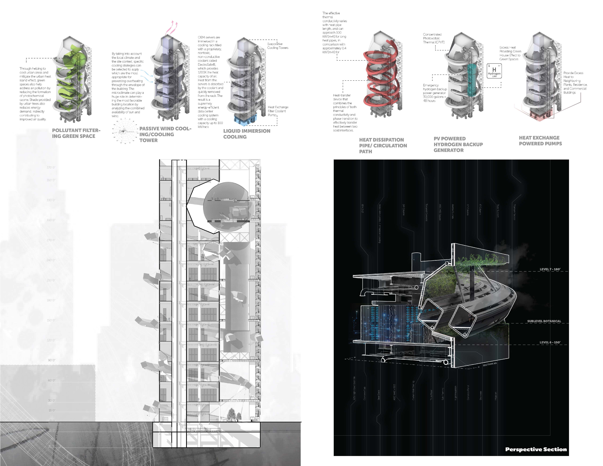

Cal Poly Pomona Undergraduate
SPDP
South Park Data Park / Civic Infrastructure
Los Angeles concentrates more internet exchange infrastructure within a single square mile than almost anywhere on earth. It is also entirely invisible. South Park Data Park proposes a civic data center where the network becomes architecture — a vertical tower threaded by a public helical ramp. The building's interior is engineered exclusively for machines, while its exterior is given over entirely to the public: a continuous promenade that ascends the full height of the tower, culminating in a butterfly conservatory at its summit. Developed through research into LA's internet exchange geography and iterative computational modeling, the project reframes data infrastructure not as something to be hidden but as a new form of civic monument — one that makes visible the invisible systems on which contemporary urban life depends.
Overview
Making the invisible exchange infrastructure walkable, legible, and inhabited.
The project challenges the typical defensive posture of data centers. Rather than walling off the servers, a public helical ramp negotiates the height of the data stacks, inviting the public into the core of the machine.
A butterfly conservatory crowns the tower at its summit — a natural counterpoint to the technological intensity below, and the culminating destination of the public promenade.
Project Documentation
Full project documentation — spreads.




